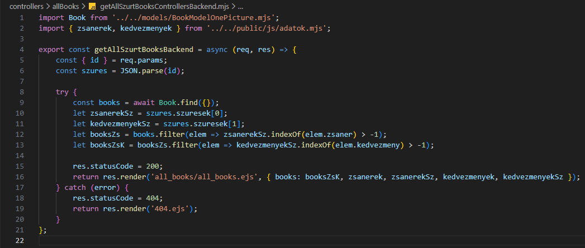

Szűrés beállítása - getAllSzurtBooksControllersBackend.mjs
Szűrés beállítása - getAllSzurtBooksControllersBackend.mjs

Ebben a részben szerkesztjük a controllers/allbooks mappában a getAllSzurtBooksControllersBackend.mjs állományt, amelyben kidolgozzuk a CRUD Read művelethez tartozó logikát. Ez megfelel a http GET metódus-hoz tartozó logikának.
-
Szerkesszük a
getAllSzurtBooksControllersBackend.mjsállományunkat.-
import Book from '../../models/BookModelOnePicture.mjs';- aBookmodell alapértelmezett beimportálása. -
import { zsanerek, kedvezmenyek } from '../public/js/adatok.mjs';- a zsánerek és kedvezmények nevesített beimportálása. -
export const getAllSzurtBooksBackend = (req, res) => {...};- hozzuk létre és vigyük ki nevesítve ahttp GET metódus-hoz tartozó logikát (ReadaCRUDműveletekből). -
const { id } = req.params;- szedjük ki azidtulajdonságot areq.params-ból. -
const szures = JSON.parse(id);- azidJSON tartalmából nyerjük ki a JavaScript tartalmat aJSON.parse()metódus segítségével. -
try { const books = await Book.find({}); let zsanerekSz = szures.szuresek[0]; let kedvezmenyekSz = szures.szuresek[1]; let booksZs = books.filter(elem => zsanerekSz.indexOf(elem.zsaner) > -1); let booksZsK = booksZs.filter(elem => kedvezmenyekSz.indexOf(elem.kedvezmeny) > -1); res.statusCode = 200; return res.render('all_books/all_books.ejs', { books: booksZsK, zsanerek, zsanerekSz, kedvezmenyek, kedvezmenyekSz });}- a sikeres ág a 200-ashttp hibakód-dal. Azid-ből nyert szűrésfeltételekkel kapott könyveket, zsánereket és kedvezményeket átadjuk aall_books/all_books.ejsállománynak. -
catch (error) { res.statusCode = 404; return res.render('404.ejs'); }- a sikertelen ág a 404-eshttp hibakód-dal.
-